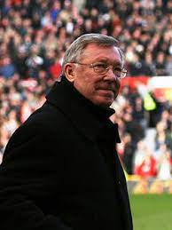
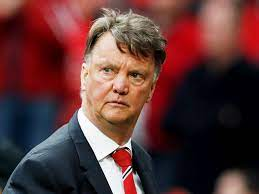
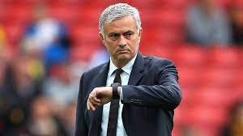

Історія сворення Манчестер Юнайтед
«Манчестер Юнайтед один із найуспішніших англійських клубів за кількістю трофеїв за всю історію, а
за останні 20 років — найуспішніший клуб в Англії. Команда виграла 38 значних трофеїв з жовтня 1986 року, коли
команду
очолив Сер Алекс Фергюсон
1968 року «Манчестер Юнайтед» став першим англійським клубом який виграв Кубок Європейських Чемпіонів, здобувши в
фіналі перемогу над португальською «Бенфікою» з рахунком 4:1.
Тренери Клубу
Алекс Фергюсон (1986—2013)

Луї ван Гала

Жозе Моурінью

Найкращі гравці
- Раян Гіггз
- Боббі Чарлтон
- Пол Скоулз
- Білл Фоулкс
Рекорди гравців
- Найбільша кількість голів у сезоні у всіх турнірах: 46 — Деніс Лоу, сезон 1963/64
- Найбільша кількість «хет-триків» у всіх змаганнях: 18 — Деніс Лоу (14 «хет-триків» і 4 «покеру» з 3 листопада
1962 по 17 квітня 1971)
- Найбільша кількість трофеїв (без урахування трофеїв молодіжної команди): 34 — Раян Гіггз
- Найшвидші 4 голи: 13 хвилин — Уле Гуннар Сульшер, проти «Ноттінгем Форест», Прем'єр-ліга, 6 лютого 1999